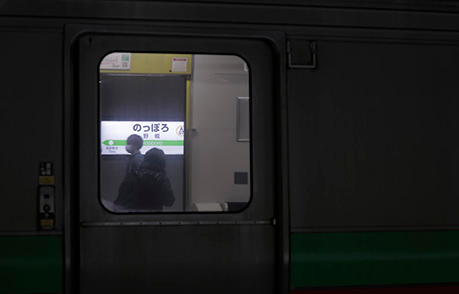
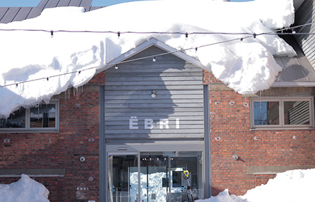

江別市は、札幌市へのアクセスがよく、自然豊かな場所です。 この自然に恵まれた地域は美しい山々や川が広がり、四季を通じて自然環境を楽しむことができます。 特に春の桜や秋の紅葉は美しく、散策やピクニックに最適です。

江別市在住の方に向けた情報が掲載されています。 暮らしについてのさまざまな情報は、こちらをご覧ください。

江別市の観光情報や、市の施設などを紹介しています。 名所や市の施設のお問い合わせなどの情報は、こちらをご覧ください。
住所:北海道江別市高砂町6番地